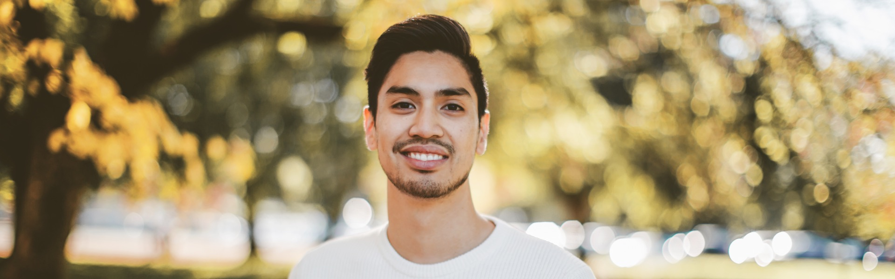

👋🏼 I'm a senior product designer in Vancouver with 9+ years of making complicated software easier to use. Right now I lead product design at MAVI, teach UX/UI at BCIT, and run a design community that got a little out of hand.
Chat with me about:
🏡 Community Builder
I started Vancouver Design Community because I wanted more designers to talk to. It's now 4,200+ people. We run socials, talks, workshops and portfolio reviews, and it's open to anyone who's curious about design, whatever your title says. Come say hi in our Slack.
🍎 Teaching
I teach UX/UI design at BCIT, which is the same place I learned it. I like classes where people make things, get critiqued, and try again, and I'd rather ask a student a good question than hand them the answer. It's turned into one of my favourite parts of the week.
📸 Moment Capturer
I held my first camera when I was 6 on a European trip with my parents and haven't stopped taking photos ever since. These days it's 5+ years of paid work: portraits, editorial, events, and portfolios for models and businesses. There's never a moment finer than one captured through a lens. See the photos.
🏐 Volleyball
🤖 AI Enthusiast
I use AI the way I'd use a very fast, slightly overconfident junior designer: great for getting somewhere quickly, and I still check the work. This site was built with it.
🥾 Hiking
♟️ Board Game Nerd
Large or tiny boxes of joy that live on my shelves singing it's sirens calls, my collection waits impatiently to be woken up in slumber. Recently I've begun my conquest on the biggest, baddest, funnest collection around and will play these boxes of joy's during lunch to appease my card board rulers. Marie Kondo would approve.
🍳 Cooking Nerd
I love testing recipes for weekly meal prep and have a knack for staying late on my phone watching how to videos on different meals. I love staying in the kitchen, creating my own yogurt and granola and I have a mighty good Pad Thai recipe.
✈️ Worldly Travels
I’ve travelled to 21 countries and have learned so much about cultures and getting out of my comfort zone. I’ve taken solo trips that have given me inspiration, creativity and learning how to be comfortable alone.
🎵 Classifying Music
Listening to ranges of music in Alternative R&B, Pop and Soul. Frank Ocean, Tyler the Creator, Amy Winehouse, Childish Gambino and Jack Johnson. Basically I’ll listen to anything else except 2 Country songs. I used to also sing in the choir, was part of a band and repetive Lofi Hip Hop or design podcasts while I work.
👔 Anything fashion-related
I love taking people out on shopping trips, giving them style pointers and hair do’s that matches their own personality. Feel free to follow my Pinterest for some seasonal inspiration for your own wardrobe.
💪🏽 Lifting Weights Repeatedly
As the title implies, I like to go to the gym three times a week and get pumped.
Kind words
I had the pleasure of working with Jarell on the redesign of an app for a rail industry client at our agency. Jarell stood out right away as someone who is both highly competent and genuinely solution-oriented. When challenges came up, he focused on finding a way forward rather than dwelling on the problem. He has deep product design knowledge, and it showed in the quality of his thinking and his output. Jarell would be a great addition to any team, and I’d happily work with him again.
I worked with Jarell at Pathrise - as a mentor, he excelled at facilitation and organization with large groups, ensuring everyone is comfortable and participating in design activities such as practice interviews, presentations, and whiteboard challenges. Jarell consistently advocated for the design track to management, and was effective in tuning his message to the audience. He was also quick to help other mentors and is overall an awesome person to work with!
I had the pleasure of working with Jarell at Copperleaf Technologies inc. Jarell is a thorough and diligent designer and a wonderful colleague. He brings a bright and refreshing atmosphere to the team, and is an empathic listener and a keen observer of people. Jarell's concepts are innovative and always have new and fresh ideas in them. He is the type of designer who thrives in exploration, but is also capable of translating his insights in to actionable solutions. On top of this, Jarell is an organizer in the larger design community, as well as that person who brings your team together with his social initiative and warm personality. I wish Jarell all the best, and anyone who get to work with him next.
I have worked with Jarell over the past 3 years in multiple roles. I'm happy to write this recommendation as there are two key professional features I see in Jarell: passion and work ethic. Jarell exhibits passion in his designs and his work environment. As mentioned in many of his other references/recommendations, Jarell brings lots of energy to the workplace and the environment. In addition, his designs focus on user experience that are often complex and multi-layered yet consistently demonstrate ease of use at the basic level. Jarell has the skill to make a complex system feel easy to use, and that is something we are all for in this industry. Over the years, I've learned that Jarell is not someone that will just stop thinking about work the moment he leaves the door. He is someone that will take a basic idea conceived in the office, then expand and flush out the details whenever he can. Jarell is willing to put in the hard work and also try to learn and better his knowledge in the digital design world. Jarell has and continues to contribute significantly to the businesses that he has been part of. He is an amazing individual, and I will continue to expect great things from him in the future.